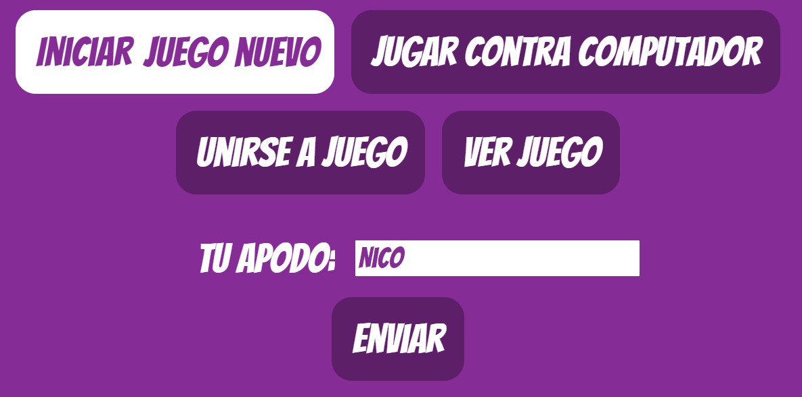
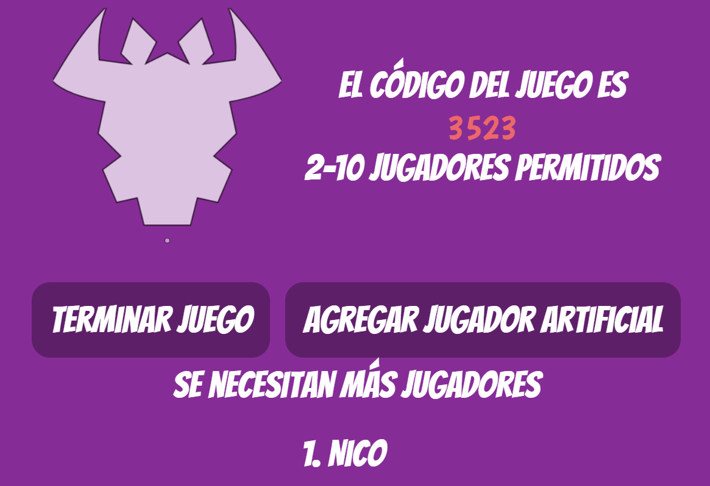
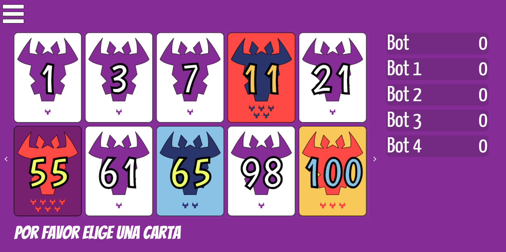

6 Nimmt!
Cómo Preparar Un Juego
Desde la página de inicio, un jugador debe seleccionar "Iniciar Juego Nuevo", y elegir un apodo.
Un código de juego será asignado para compartir con otros jugadores. Desde esta página también se pueden agregar jugadores artificiales.
Otros jugadores pueden utilizar el código para unirse al juego desde la página de inicio.
Reglas
Se utiliza una baraja especial. Hay 104 cartas enumeradas de 1 a 104. Cada carta tiene un numero de cabezas de ganado.

Cada cabeza de ganado es un punto, y el objetivo del juego es ser el jugador con menos puntos al final del juego.
Preparación
Cada jugador recibe 10 cartas, y 4 cartas se ponen sobre la mesa verticalmente de menor a mayor.
Así se ve la mesa:

Los espacios en blanco a la derecha se utilizan para mostrar las cartas jugadas en cada turno.
Así se ven las cartas de un jugador:
Deslice a la izquierda o derecha para cambiar entre la mesa y sus cartas.
Juego
Al comienzo de cada turno, cada jugador elige una de sus cartas.
Cuando todos hayan elegido una carta, las cartas se destapan, y se colocan en la mesa de menor a mayor de acuerdo a las siguientes reglas:
- Una carta se coloca al final de la fila cuya última carta es menor que la carta en juego, y la ultima carta de la siguiente fila es mayor que la carta en juego.
- Al jugador que coloque la sexta carta en una fila le toca llevarse las 5 cartas anteriores que hubiera en esa fila. Se le añaden los puntos de esas 5 cartas.
- Si la carta en juego es menor que la ultima carta en la primera fila, el jugador que haya puesto esa carta tiene que elegir una fila para llevarse (generalmente la que tenga menos puntos) y la carta en juego se deja como reemplazo de la fila elegida.


Al cabo de 10 turnos, cuando se le acaben las cartas a los jugadores, se le vuelven a repartir 10 cartas a cada jugador y se ponen 4 sobre la mesa (igual que al comienzo). El juego continua.
Final del juego
El juego se acaba cuando algún jugador alcance 66 puntos. El ganador es quien tenga menos puntos.